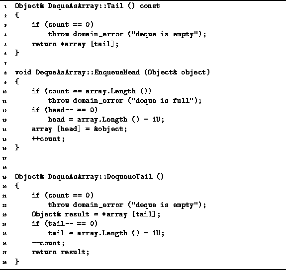

Data Structures and Algorithms
with Object-Oriented Design Patterns in C++
Data Structures and Algorithms
with Object-Oriented Design Patterns in C++
Program  defines the Tail,
EnqueueHead and DequeueTail member functions
of the DequeAsArray class.
defines the Tail,
EnqueueHead and DequeueTail member functions
of the DequeAsArray class.

Program: DequeAsArray Class Tail EnqueueTail and DequeueTail Member Function Definitions
The Tail member function simply returns a reference to the object found at the tail of the deque, having first checked to see that the deque is not empty. If the deque is empty, it throws a domainerror exception. Under normal circumstances, we expect that the deque will not be empty. Therefore, the normal running time of this function is O(1).
The EnqueueHead function takes a single argument which is a reference to an object to be added to the head of the deque. The EnqueueHead function first checks that the deque is not full--a domainerror exception is thrown when the deque is full. Next, the position at which to insert the new element is determined by decreasing the member variable head by one modulo the length of the array. Finally, a pointer to the object to be enqueued is put into the array at the correct position and the count is adjusted accordingly. Under normal circumstances (i.e., when the exception is not thrown), the running time of EnqueueHead is O(1).
The DequeueTail function removes an object from the tail of the deque and returns a reference to that object. First, it checks that the deque is not empty and throws an exception when it is. If the deque is not empty, the function sets aside a reference to the object at the tail in the local variable result; it decreases the tail member variable by one modulo the length of the array; adjusts the count accordingly; and returns result. All this can be done in a constant amount of time so the running time of DequeueTail is a constant.
 Copyright © 1997 by Bruno R. Preiss, P.Eng. All rights reserved.
Copyright © 1997 by Bruno R. Preiss, P.Eng. All rights reserved.